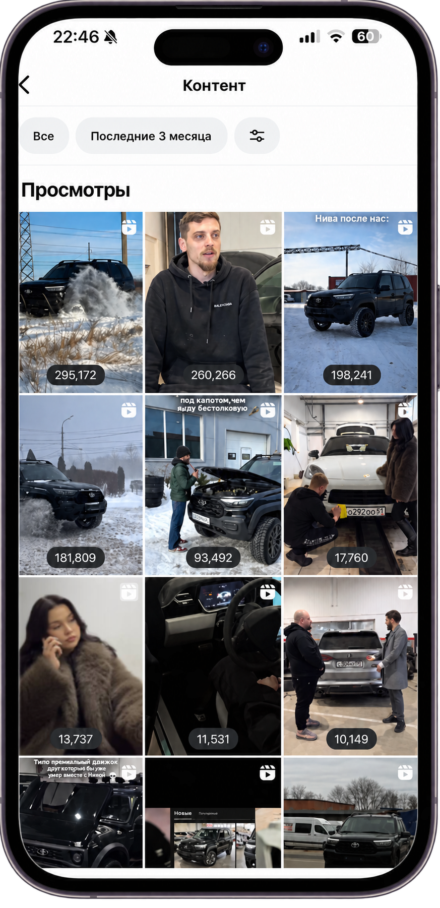

Автосервис / стратегия и Reels
Автосервис
Сместила акцент на юмор и узнаваемые жизненные ситуации. Добавила лёгкую подачу в экспертные темы и сохранила баланс между пользой и развлечением.
- Внедрила Reels с понятными и жизненными ситуациями.
- Выстроила более узнаваемый стиль коммуникации.
- Добавила больше живого контента в аккаунт.
Примеры Reels
Просмотры роликов · последние 3 месяца

4 янв — 7 фев+876подписчиков
за месяц